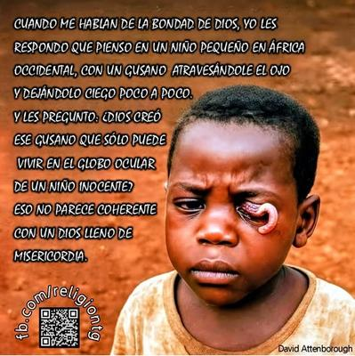

Desde la biología, el Loa loa no es una aberración de la naturaleza, sino un ejemplo particularmente inquietante de cómo funciona la evolución: un nemátodo parásito adaptado para sobrevivir a costa de otro organismo. Presente en África central y occidental, este gusano es transmitido por moscas del género Chrysops (tábanos), que cuando se alimentan de sangre, depositan larvas que penetran la piel humana y migran por el tejido subcutáneo.


Pero aunque se le conoce popularmente como «gusano africano del ojo», este nemátodo no se alimenta de los tejidos del ojo ni los destruye de forma directa. Lo normal es que se mantenga en la superficie, desplazándose bajo la conjuntiva (la membrana transparente que cubre el blanco del ojo). Sin embargo, existen registros médicos de casos en que el gusano ha logrado cruzar las barreras del ojo para alojarse en estructuras internas, pudiendo penetrar en el globo ocular. Y a diferencia de su paso superficial, cuando el parásito se vuelve intraocular puede provocar —aparte de inflamación y dolor— pérdida de la vista. Y en estos casos, la extracción quirúrgica urgente es necesaria, para evitar daños permanentes en la estructura interna del ojo.
De cualquier forma, el fenómeno es profundamente perturbador: un organismo cuyo ciclo de vida incluye alojarse en el ojo humano, difícilmente encaja con la idea intuitiva de un mundo diseñado para el bienestar.
Pero aún con toda la impresión que esto pueda causarnos, desde una perspectiva biológica este tipo de organismos no plantea ningún misterio: son el resultado de millones de años de evolución por selección natural, en que no hay intención, ni propósito moral, ni planificación ética. Porque la evolución no «piensa», ni «siente», ni «decide», simplemente selecciona lo que funciona para la supervivencia y reproducción, aunque eso implique sufrimiento extremo para otros seres vivos.
El problema surge cuando se intenta reconciliar estos hechos con la idea de un «Dios» omnipotente, omnisciente y moralmente perfecto, quien habría diseñado cada especie. Si ese fuera el caso, el Loa loa no sería un subproducto resultante de procesos naturales, sino el resultado de una decisión consciente. Y ahí aparece la tensión: ¿Qué clase de diseñador crearía organismos cuya supervivencia depende de invadir tejidos humanos sensibles —como los ojos— y provocar dolor y sufrimiento?
Una defensa común en contextos religiosos es atribuir esto a algún tipo de «pecado» o caída moral —como el ciego de nacimiento que se encontró Jesús un día, y que sus discípulos le preguntaron quién había cometido las faltas que provocaron su ceguera (Juan 9:1-2). Pero este «argumento» se desmorona frente a la realidad biológica, porque las víctimas de la loiasis incluyen con frecuencia niños inocentes que viven en zonas endémicas, expuestos por condiciones geográficas y ambientales, no por decisiones morales. No hay relación causal entre conducta ética y parasitismo, porque la biología no distribuye enfermedades según mérito o culpa. Un niño infectado por Loa loa no es «responsable» en ningún sentido coherente. De modo que si existiera un diseñador moral detrás de este sistema, su justicia sería, como mínimo, profundamente cuestionable.
Este conflicto, por supuesto, no es nuevo. Incluso figuras históricas que vivieron en contextos religiosos se enfrentaron a esta contradicción: el sufrimiento injustificado en la naturaleza. Charles Darwin (1809-1882) lo observaba en las avispas que se alimentan de orugas vivas desde su interior. En una carta dirigida a Asa Gray con fecha 22 de mayo de 1860, escribió: «Me parece que hay demasiada miseria en el mundo. No puedo convencerme a mí mismo de que un Dios benévolo y omnipotente hubiera creado de manera diseñada a los icneumónidos [avispas diminutas del orden himenóptero] con la intención expresa de que [sus larvas] se alimentaran dentro de los cuerpos vivos de las orugas». («The Correspondence of Charles Darwin», Frederick Burkhardt & Sydney Smith).
Si bien Darwin no estaba pensando en el Loa loa, su argumento aplica perfectamente: porque los parásitos que dependen del sufrimiento de otros organismos, desafían la idea de un diseño benevolente.
Pero el también naturalista británico David Attenborough (n. en 1926), sí se enfoca en el Loa loa para expresar con claridad esa crueldad natural que no es coherente con la visión selectiva de los creyentes. Explica que cuando los creacionistas le hablan sobre la bondad de «Dios» como autor de cosas hermosas, como los colibríes, las mariposas, el ave del paraíso, las orquídeas o los girasoles, él les responde que suele pensar más bien en un niño pequeño en África Occidental, con un gusano parásito atravesándole el ojo y dejándolo ciego poco a poco. Y les pregunta si ese «Dios» en que ellos creen, creó ese gusano que no puede vivir en otro lugar diferente que en el globo ocular de un niño inocente. Para terminar diciéndoles que a él le resulta difícil conciliar esa idea con un «Dios» lleno de misericordia.[1][2]
Evidentemente esto tiene relación con el concepto del «Diseño Inteligente», que sugiere que los sistemas biológicos son demasiado complejos para surgir sin una mente que los planifique. Sin embargo, cuando observamos organismos como el Loa loa, el enfoque cambia radicalmente, porque no se trata sólo de si algo es complejo, sino de si su existencia es compatible con un diseñador moralmente bueno.
Es obvio que, si alguien diseñara deliberadamente un sistema donde los insectos transmiten larvas al alimentarse de humanos, y esas larvas migran por el cuerpo atravesando ocasionalmente el ojo y causando daño y dolor, no lo podríamos considerar un «diseñador inteligente» en el sentido ético, sino un ser cruel o indiferente.
Desde la biología evolutiva, en cambio, todo esto encaja sin contradicciones: mutaciones aleatorias + selección natural + tiempo = adaptaciones funcionales, sin importar el sufrimiento que impliquen.
Por tanto, el Loa loa no es un «argumento emocional», sino más bien un dato biológico incómodo. Representa un punto de fricción entre dos formas de entender el mundo:
La científica, que explica estos fenómenos como procesos naturales sin propósito moral.
La teológica tradicional, que atribuye intención y bondad a la creación.
Ambas son incompatibles cuando se examinan casos como éste. Pero desde una postura científica la conclusión es clara: no hay evidencia de un diseñador moral detrás de estos sistemas. Lo que hay es un universo indiferente, donde la vida evoluciona sin considerar el dolor que produce. Paradójicamente, esa ausencia de intención es mucho más coherente con la realidad observada, que la idea de un diseño deliberado que incluye gusanos que atraviesan los ojos de niños inocentes.
[Godless Freeman]
Comentarios
Comments powered by Disqus